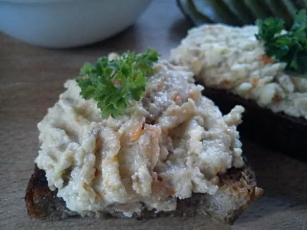

Форшмак из сельди
Паштет из сельди с яблоком и яйцом для бутербродов
25 мин6 порц.234 ккал на порциюБ 13 · Ж 17 · У 7Еврейская кухня
Открыть в приложении: порции, таймеры, список покупок
Продукты на 6 порц.
- Сельдь солёная1 шт
- Яйцо куриное2 шт
- Яблоки1 шт
- Лук репчатый0,5 шт
- Хлеб белый2 ломтика
- Сливочное масло50 г
- Вода2 ст. л.
- Перец чёрный молотый1 щеп.
Как готовить
- Яйца сварите вкрутую 10 минут, остудите в холодной воде и очистите.
- Сельдь разделайте: снимите кожу, выньте хребет и все косточки, получится филе.
- Хлеб без корки замочите в воде на 3-5 минут и слегка отожмите.
- Яблоко очистите от кожуры и семян, лук очистите.
- Пропустите через мясорубку или измельчите блендером сельдь, яйца, яблоко, лук и хлеб.
- Добавьте мягкое сливочное масло и перец, перемешайте до однородной пасты.
- Уберите в холодильник на 1 час, чтобы форшмак загустел.
Совет. Сельдь берите малосольную, иначе паштет выйдет пересоленным. Хранится в закрытой банке в холодильнике 2 дня.